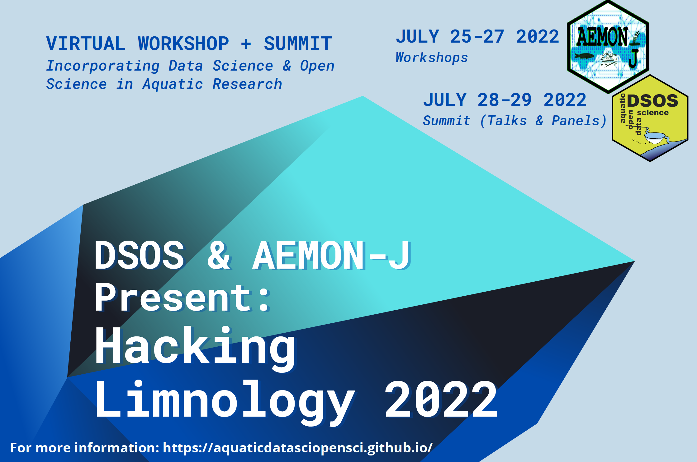

| Home | Registration | AEMON-JWorkshops | DSOSSummit | Code ofConduct | Material | Jobs | Info | Archive |
Hello fellow aquatic data scientists, we started the planning of the 2023 DSOS and Hacking Limnology and are really excited. The organizational team consist of a diverse group of early career scientists and we are always open for suggestions and are looking for other people that want to contribute to the summit and workshop. If you are interested in helping us make the 2023 event a success we invite you to reach out to us via twitter or by emailing one of the organizers.
The grass-root network DSOS (Data Science and Open Science) and AEMON-J (Aquatic Ecosystem MOdeling Network - Junior) are joining forces this year to organize a 3rd 'Virtual Summit: Incorporating Data Science and Open Science in Aquatic Research' that includes fascinating presentations about aquatic research including open data and open science approaches, and multiple days of exciting workshops that include state-of-the-art keynote talks with live hands-on coding exercises. We are adapting the Carpentries Code of Conduct for our meeting.
For each day of the "Hacking Limnology" workshop (AEMON-J workshop series), there will be a major theme (e.g., big data, remote sensing, machine learning, and numerical modeling). The general schedule for each day will include a keynote presentation followed by a live Q&A session. The majority of the time will be dedicated to a hands-on coding workshop, where attendees will gain experience in each of the three main themes. Lastly, each day will end with the heart of any AEMON-J meeting: a break-out group format, which will be geared towards spurring new research projects and ideas. Here, we want to engage everybody to find new team mates and initiate collaborations.
For the Virtual Summit: Incorporating Data Science and Open Science in Aquatic Research (DSOS), we will host 10 minute talks from 20 presenters with Live Q&A sessions. Additionally, this year's summit will future a "Careers in Data Science and Open Science" panel and an "Operationalizing Interoperability" panel. The summit is intended to bring together diverse, energetic folks who are passionate to share how they bring data science and open science into their research. To get an idea of how the summit will run, you can read about 2020 Virtual Summit and the 2021 Virtual Summit in their respective L&O Bulletin Meeting Highlights pieces.
For those who may be curious but less familiar, data science combines mathematics and statistics, computer science, and domain expertise to enable prediction and insight for problems that are otherwise too computationally demanding or data-intensive to be analyzed with traditional tools. Open Science is the practice of making tools that enable transparency into scientific design, analysis, and reporting, such that future researchers -- and curious individuals in general -- can access and reproduce others' work. By bringing together speakers who practice data science and open science techniques, this virtual summit is intended to discuss how limnologists and oceanographers (1) work with big data, (2) develop new modeling frameworks, (3) develop tools and software for the larger community, and (4) apply their work for natural resource management and monitoring purposes.
By partnering DSOS with AEMON-J, we hope that this venue brings together a diverse array of aquatic scientists, who are all interested in data-intensive techniques.
DSOS and AEMON-J are committed to ensuring that diversity, equity, inclusion and accessibility (DEIA) are core values reflected in our internal culture and practices. Our vision is that our combined commitment to DEIA will strengthen interdisciplinary collaboration among aquatic scientists engaged in data science and open science practices by fostering the representation of diverse backgrounds and perspectives in the hydrologic, ecological, and limnological, and oceanographic sciences. If you have suggestions or comments for how we as a community can better support and encourage a diverse, equitable, inclusive, and accessible environment, please reach out to the organizational teams.
|  |
| GitHub Website Template by Mike Pierce | © DSOS-AEMON/J 2022 |
{kind=link}